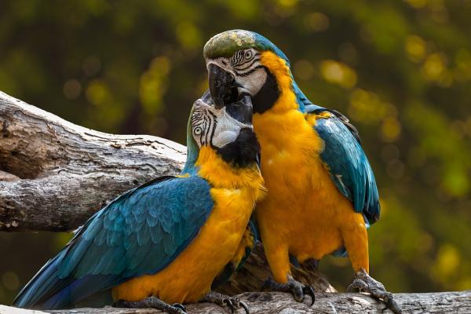

La reproducción es el proceso por el cual los seres vivos producen nuevos individuos semejantes a los progenitores, asegurando la perpetuación de las especies. En los animales existen dos tipos de reproducción: sexual y asexual.
Solo participa un individuo. La unidad reproductora puede ser una célula o un grupo de células, dando lugar a un individuo genéticamente igual al progenitor.
Se realiza mediante la unión de dos células provenientes de dos individuos distintos. Los descendientes son la mezcla de ambos progenitores, que suelen ser morfológicamente diferentes y pertenecientes a sexos diferentes: macho y hembra.
Existen más de 300.000 especies de plantas, que podemos clasificar, de forma general, en dos grandes categorías
No todas las especies se reproducen del mismo modo, aunque podemos dividirlas en dos grandes grupos: las que se reproducen sexualmente y las que lo hacen de forma asexualmente.
El proceso de la reproducción se desencadena cuando la planta es polinizada. La polinización se produce cuando los insectos o pequeños animales voladores como los colibrís, abejas o moscas trasladan el polen de unas plantas a otras.
La reproducción sexual tendrá lugar cuando el polen procedente de una flor de gameto masculino quede depositado en otra de gameto femenino. El polen comenzará a germinar, dará lugar a una nueva flor que a su vez producirá semillas y así sucesivamente.
La reproducción sexual puede ser de dos tipos:
*Autogamia
*Alogamia
Hablamos de reproducción asexual cuando a partir de la célula de una planta se crea otra idéntica, debido al procedimiento de mitosis. La reproducción asexual se suele dar en las plantas no vasculares, es decir, en las que no tienen raíces, tallos ni vasos que conduzcan la savia.
Existen multitud de plantas que pueden multiplicarse de forma asexual mediante alguno de estos 4 procesos:
*Mitosporas
*Reproducción *vegetativa
*Apomixis
*Propágulos